Описание функций и возможностей программы.
Оглавление.
Основные элементы программы.
Начало работы. Подключение к Базе Данных.
Создание нового запроса.
Редактирование запроса.
Выполнение запроса.
Работа с результатами в таблице. Копирование. Экспорт.
Работа со списком запросов. Перемещение, удаление запросов.
Заголовок предназначен для вывода всей необходимой информации пользователю, такой как: готовность программы к работе, возникновение каких-либо ошибок
и методы их устранения, описание выведенных данных.
2. Меню.
Меню содержит необходимый функционал.
3. Список.
Список хранит все созданные запросы.
4. Таблица.
Таблица отображает результаты выполнения запросов.
5. Кнопки.
Предоставляют дополнительный функционал.
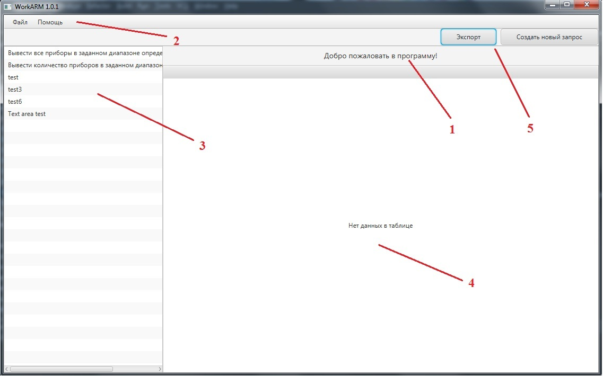
Перед началом работы убедитесь, что программе удалось найти и подключиться к Вашей Базе Данных.
Если всё готово, и программа готова к работе, вы увидете следующее сообщение при старте:
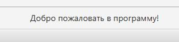
Если Вы первый раз начали работать с программой, либо переместили Базу Данных или по еще каким-либо причинам программе не удалось обнаружить Базу Данных,
пугаться не стоит. Установить соединение с Базой Данной очень просто. Если Вы видите красную надпись, что соединение с Базой Данных установить не удалось,
всё что Вам необходимо сделать, это выбрать пункт меню "Файл", а затем "Выбрать Базу Данных..." и указать путь к файлу Базы Данных в Вашей системе.
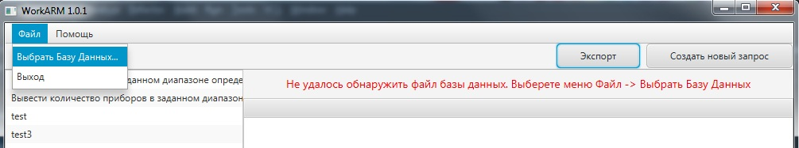
Если Вы сделали всё правильно, Вы увидите в заголовке соответствующую надпись и можно приступать к работе!
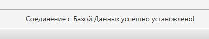
Для того, чтобы создать новый запрос, нажмите на кнопку "Создать новый запрос" и откроется окно создания нового запроса.
1. Имя запроса.
В данное поле вводится будущее имя запроса, то как оно будет отображаться в списке запросов на главном окне программы.
Имя может быть произвольным.
2. Запрос SQL.
В данное поле вводится сам запрос SQL с параметрами или без. Чтобы ввести параметр, перед ним нужно поставить символ '&', тогда всё, что стоит после
него до пробела будет именем параметра. Все параметры нужно будет внести в таблицу параметров с указанием их типа и расшифровки.
Чтобы для удобства расширить поле запроса SQL, нажмите двойным щелчком левой кнопки мыши на поле запроса SQL и появится окно редактирования
запроса SQL.
3. Тест заголовка.
В данное поле вводится текст, который будет отображен пользователю после выполнения зароса программой в заголовке.
Так же может содержать параметры, которые были в поле запроса SQL.
4. Таблица параметров
В данную таблицу вносятся ВСЕ параметры, которые были использованы при составлении SQL запроса в поле запроса SQL.
При этом лишние параметры так же недопустимы (будет выведено соответствующее сообщение об ошибке).
5. Элементы ввода нового параметра.
Требует заполнение двух полей: "Параметр" и "Расшифровка", а так же указания типа поля. Поле "Параметр" - это имя параметра. Оно должно СОВПАДАТЬ с
именем параметра в поле запроса SQL. Поле "Расшифровка" содержит произвольное имя-описание данного параметра, чтобы
пользователь знал, что требуется в него вводить. Например, "тип прибора" или "имя сотрудника".
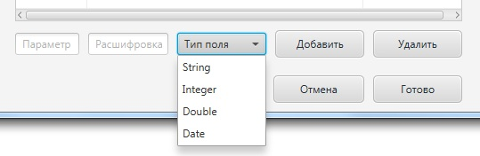
6. Кнопки отмена, готово.
Пример заполнения:
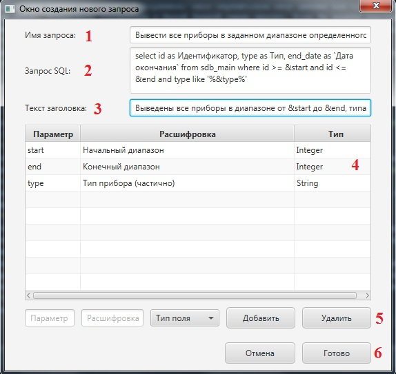
Чтобы отредактировать запрос, изменить имя, изменить сам запрос, либо изменить выводимый заголовок, нажмите правой кнопкой
в списке запросов на запрос и выберите пункт выпадающего меню "Редактировать запрос".
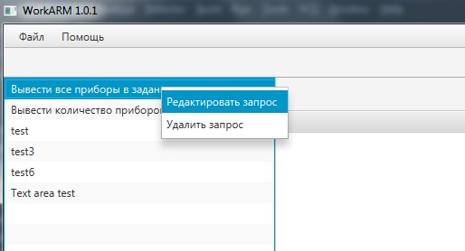
Чтобы выполнить запрос из списка, нажмите левой кнопкой мыши на запрос и появится окно установки параметров запроса.
В появившемся окне необходимо заполнить все поля параметров ПРАВИЛЬНЫМИ значениями. Поле может содержать 4 вида типов параметров:
1. ЦЕЛОЕ - целое число. Например "10".
2. ДЕСЯТИЧНОЕ - число с плавающей точкой. Например "10.25".
3. ДАТА - календарная дата. Например. "20.06.2016".
4. СТРОКА - любая последовательность символов. Допустимы как буквы, так и цыфры, а так же специальные символы.
Чтобы узнать, какой тип данных требует поле (если из наименования поля это всё еще не понятно), следует навести на него указателем мыши и
прочесть всплывающую подсказку.
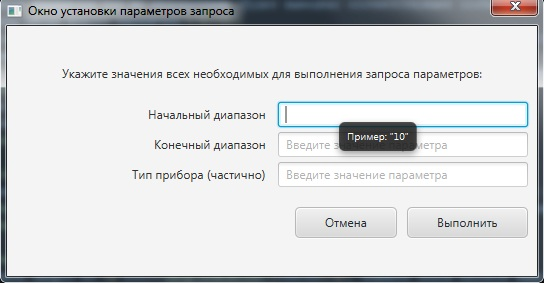
Не стоит бояться вбить что-то неправильно, программа не допустит ввода некорректных значений и выдаст Вам соответствующее сообщение об ошибке под полем,
которое необходимо будет исправить.
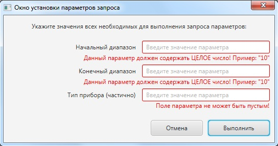
Чтобы выполнить запрос необходимо нажать на кнопку "Выполнить". Результаты запроса будут выведены в таблицу на
главном окне программы, а сверху появится заголовок поясняющий результат вывода.
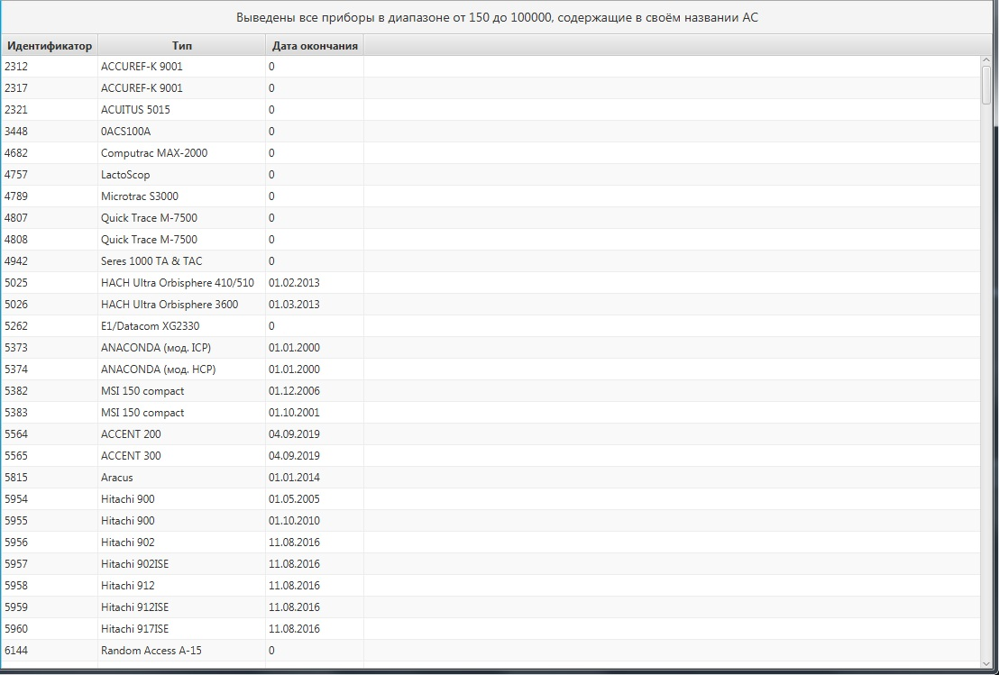
Помимо того, что результаты запроса можно просмотреть глазами, их так же можно скопировать в текстовый документ, либо прямиком в Microsoft Excel.
Чтобы выбрать один элемент в столбце просто нажмите по нему левой кнопкой мыши. Чтобы выбрать дополнительный элемент к нему, следует зажать клавишу
CTRL и выбирать элементы левой кнопкой мыши по очереди.
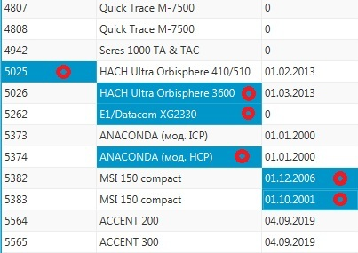
Чтобы выбрать блок элементов, нужно выбрать начальный элемент левой кнопкой мыши, затем с зажатой клавишой SHIFT выбрать противоположный элемент блока.
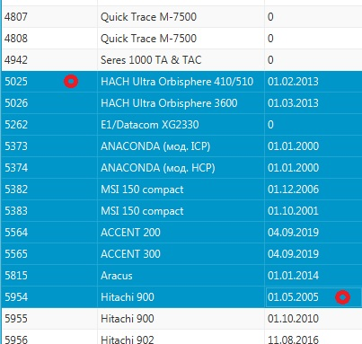
Для копирования выделенных элементов или блока элементво используются стандартные сочетания клавиш CTRL+C и CTRL+V для вставки.
Вот так будет выглядить вставка в Microsoft Excel:
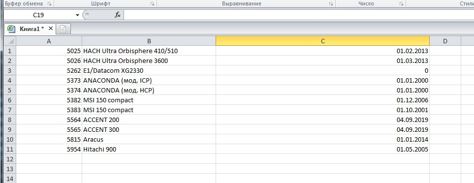
Чтобы экспортировать все результаты таблицы в текстовый формат, который в полседствии можно будет открыть и использовать в Microsoft Excel или любом
текстовом редакторе необходимо нажать на кнопку "Экспорт" и выбрать путь в фаловой системе, где будет сохранен файл txt.
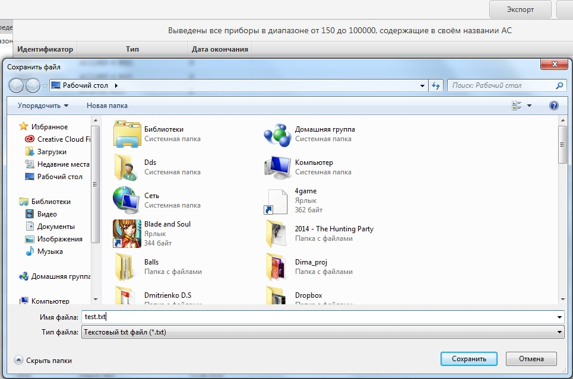
Чтобы поменять расположение запросов необходимо зажать запрос из списка левой кнопкой мыши и перетащить на желанное место,
не отпуская кнопку мыши.
Чтобы удалить запрос, выберите запрос из списка и откройте всплывающее меню правой кнопкой мыши. Далее выберите поле
"Удалить запрос".
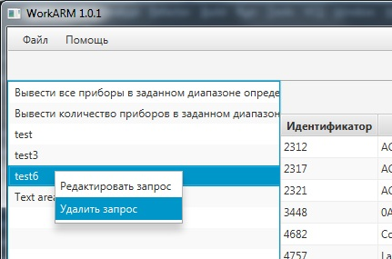